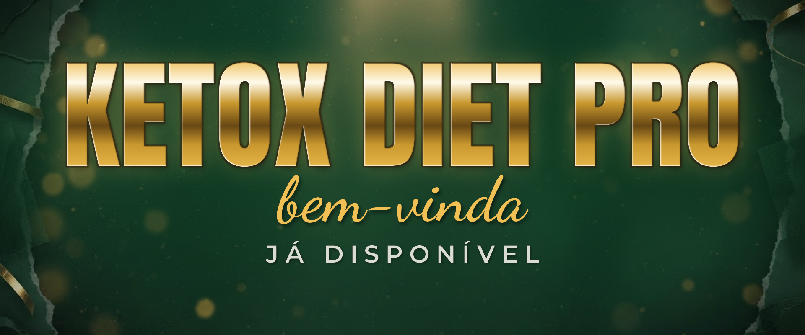

ARTE FINAL · 1920×800
Copy
KETOX DIET PRO
bem-vinda
JÁ DISPONÍVEL
Estilo / referência de designCromado dourado 3D, texto centralizado. Display em caixa alta com gradiente metálico e bisel, script dourado logo abaixo e linha de apoio em creme espaçado. Fundo verde profundo com textura de mármore, bokeh dourado e fitas metálicas nos cantos — referência de capa de lançamento premium.
JustificativaReplica a hierarquia aprovada pelo Elton e traduz a marca em acolhimento — “bem-vinda” fala com o público feminino no primeiro segundo de posse, e “JÁ DISPONÍVEL” confirma que não há espera.